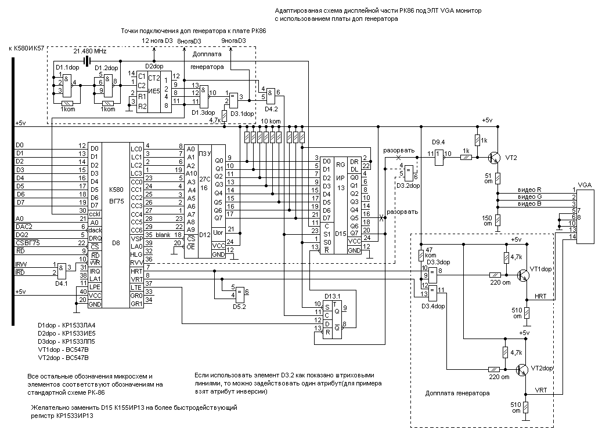

Code:
BG75HACT.txt:
FAC0 21
FAD0 01 C0 36 00 2B 36 4D 36 5D 36 CC 36 D3 23 36 27
Схема подключения РК к VGA:

Возможно, чтобы схема работала, в монитор Радио-86РК надо внести изменения:
|
|
|
|
|
|
Code: BG75HACT.txt: FAC0 21 |
Другого объяснения, зачем нужен этот код, найти не удалось.